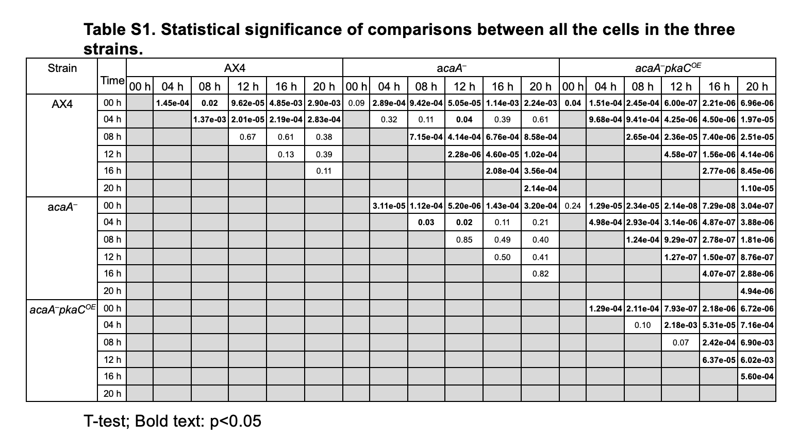

Statistična analiza enoceličnih transkriptomskih podatkov pri razvoju vrste Dictyostelium
Primer: kvantifikacija razvojne sinhronosti od posameznih celic do preverjanja hipotez na ravni bioloških replik.
1. Moja vloga
Računska analiza eksperimentalnih podatkov
02 / 07
Moje ozadje je mešano, moj prispevek pa je predvsem računska in statistična analiza.
Po osnovni izobrazbi prihajam iz biokemije, nato sem nadaljevala v računalništvu.
V doktoratu delam predvsem na računski in statistični strani analize.
Laboratorijsko delo, kulture in sekvenciranje pripravljajo sodelavci na Baylor College of Medicine v Houstonu.
Moj del je priprava podatkov, izbira statističnih pristopov in interpretacija rezultatov skupaj s sodelavci.
2. Biološki sistem
Zakaj Dictyostelium?
03 / 07
Dictyostelium je uporaben model, ker je razvoj časovno dobro opredeljen in ga lahko mehanistično motimo.
Ob stradanju celice preidejo iz enoceličnega v večcelični način življenja.
cAMP pulzi sprožijo agregacijo; v približno 20 urah nastaneta predsporna in predstebelna usoda.
Vzorčimo pri 0, 4, 8, 12, 16 in 20 urah, zato je čas dejanska spremenljivka v načrtu.
Mutant acaA⁻ pulzov cAMP ne more tvoriti in se ne razvije.
Mutant acaA⁻pkaCOE pulzov ne more tvoriti, vendar se zaradi PKA vseeno razvije.
Pregled življenjskega cikla: stopnje so vzorčene pri 0, 4, 8, 12, 16 in 20 urah po stradanju.
3. Podatkovni nabor
Enocelični časovni niz
04 / 07
Pomembni niso le transkripti na ravni celic, ampak tudi to, iz katere replike vsaka celica prihaja.
Približno 50.000 vrstic pomeni približno 50.000 celic; stolpci so geni, vnosi pa število transkriptov.
Vsaka celica ima metapodatke: iz katerega seva prihaja, iz katere časovne točke in iz katere replike.
50.000 celic ne pomeni 50.000 neodvisnih opazovanj.
Kulture so vzgojili ločeno, vsako označili z drugim fluorescenčnim proteinom in jih združili šele tik pred sekvenciranjem.
Zato za vsako celico vemo, iz katere neodvisne kulture izvira.
Za vsak sev in časovno točko imamo tri ali štiri neodvisne biološke replike.
Pogled matrike in primeri genov, ki se skozi čas spreminjajo.
4. Vzorec v podatkih
Kaj pokažejo podatki: UMAP
05 / 07
UMAP je vizualni povzetek: vsaka točka je ena celica, bližnje točke pa imajo podobno gensko izražanje.
Divji tip, obarvan po času: zgodnje celice pri 0 in 4 urah so ločene od poznejših stopenj, barve pa se lepo prelivajo.
Divji tip, obarvan po tipu celice: poznejši del se razcepi v predsporno in predstebelno regijo.
acaA⁻: skoraj vse celice ostanejo v zgodnjem, enoceličnem območju.
acaA⁻pkaCOE: celice dosežejo obe usodi, vendar so časovne točke močno premešane.
Sklep: cAMP pulzi pomagajo ohranjati razvojno sinhronost, odločitev za usodo pa je vsaj delno ločena od tega.
UMAP: dvorazsežni povzetek, kjer vsaka točka predstavlja eno celico, bližnje točke pa imajo podobno gensko izražanje.
5. Statistična presoja
Hipoteze, predpostavke, izbira testa
06 / 07
Delovni primer: AX4 proti acaA⁻ pri 8 hH₀: povprečna sinhronost je v obeh sevih enaka. Hₐ: seva se razlikujeta — cAMP signalizacija je pomembna.
1. NeodvisnostCelice iz iste kulture niso neodvisne, zato bi test na ravni celic povzročil psevdoreplikacijo. Vse celice znotraj replike zato povzamemo v eno vrednost sinhronosti; po tem koraku je n = 3 na skupino.
2. 95-% interval zaupanja z neparametričnim bootstrapomσ je neznan, pri treh replikah pa normalnosti ne moremo zanesljivo preveriti. Zato replike 10.000-krat vzorčimo s ponavljanjem in vzamemo 2,5. ter 97,5. percentil.
3. t-test na ravni replik (Welch)Primerjamo dva seva v eni časovni točki. Izid je zvezna vrednost med 0 in 1, σ je neznan, varianci pa se lahko razlikujeta, zato uporabimo Welchov t-test.

Zgoraj je sinhronost skozi čas: svetlejše točke so replike, temna črta je povprečje, pas pa 95-% bootstrap interval zaupanja. Spodaj je tabela statistične značilnosti, ki povzema primerjave med posameznimi sevi in časovnimi točkami.
6. Smer naprej
Napoved transkripcijskih faktorjev z umetno inteligenco
07 / 07
IzhodiščeRezultat o sinhronosti pokaže, da se divji tip razvija usklajeno. Naslednje vprašanje je, kako se celice nato razcepijo v predsporno in predstebelno usodo.
PristopRaziskujem uporabo temeljnih modelov umetne inteligence, naučenih na velikih zbirkah enoceličnih podatkov, skupaj z omrežnimi pristopi za napoved transkripcijskih faktorjev.
RezultatCilj ni dokončen odgovor, ampak kratek prioritetni seznam kandidatnih transkripcijskih faktorjev, ki jih lahko sodelavci nato eksperimentalno preverijo.